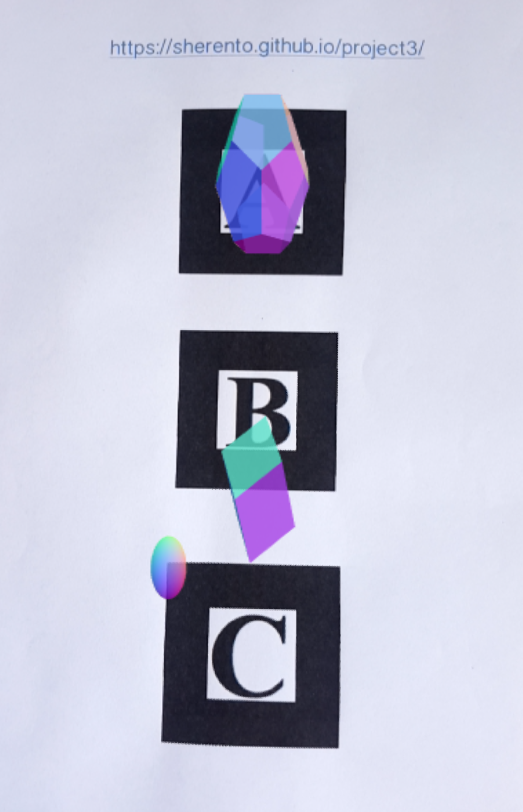
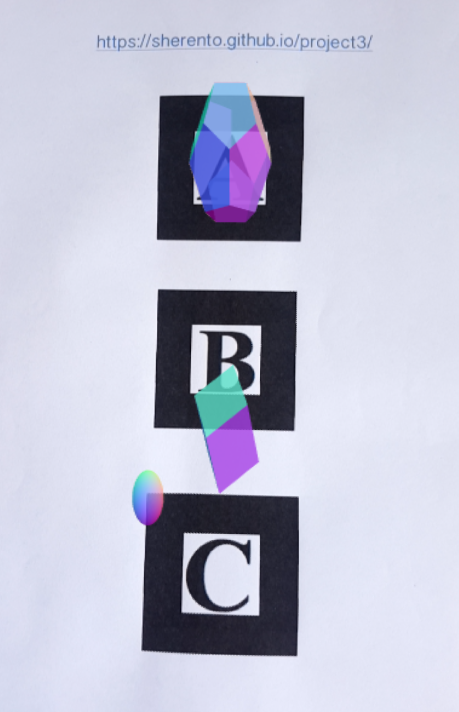

I'm Sheren, an aspired front-end web developer. I've just finished studying full stack web development with GA. And very much enjoyed the change and fast-paced learning of both front-end and back-end applications. I am ready for new challenges and opportunities to keep learning. I can't wait to put my new skills to play! I was a scientist in my past life. I learned some valuable skills but something was missing and lacked a bit of spark.. I then embraced my curiousity of how this all works..so here I am.. And very excited about creating the magic of possibilities..


 
